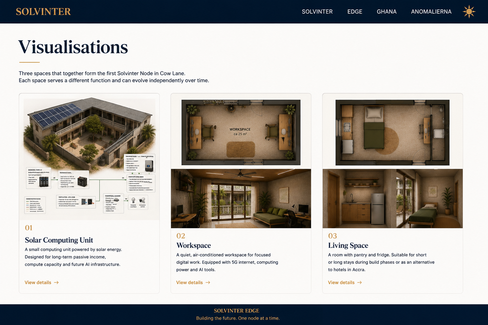

Visualisations
Three visual starting points for Cow Lane Node 0.1: the first workspace, a temporary living space, and a future solar-powered compute unit.

Explore

Workspace
The first phase of Edge: a quiet, AC-cooled, ergonomic workstation room with reliable connectivity, computers and AI-assisted digital work.

Living Space
A compact room with sleeping space, pentry and fridge for temporary stays during the build phase or future overnight visits in Accra.

Solar Compute
A later-stage vision: small solar-powered compute infrastructure that can support rendering, AI work and passive long-term value creation.